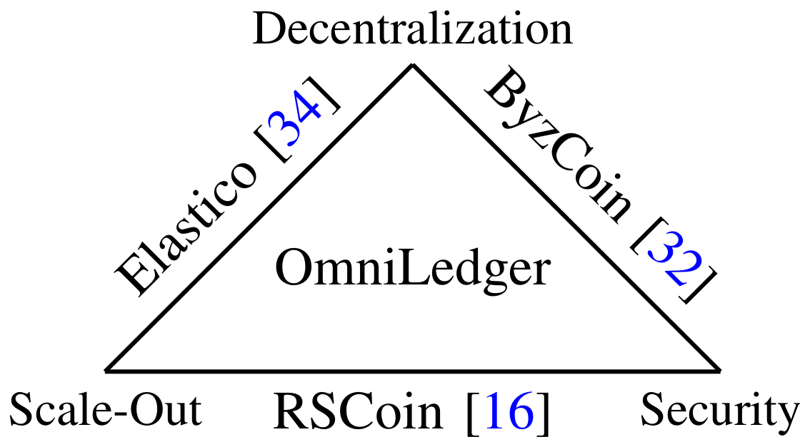
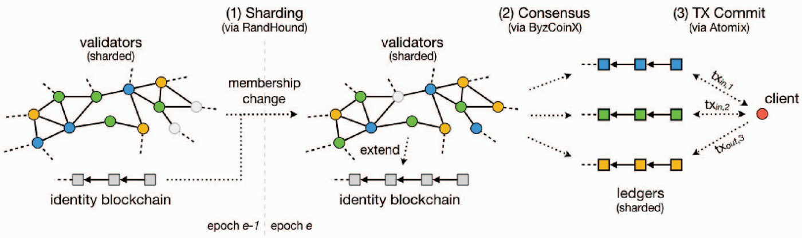
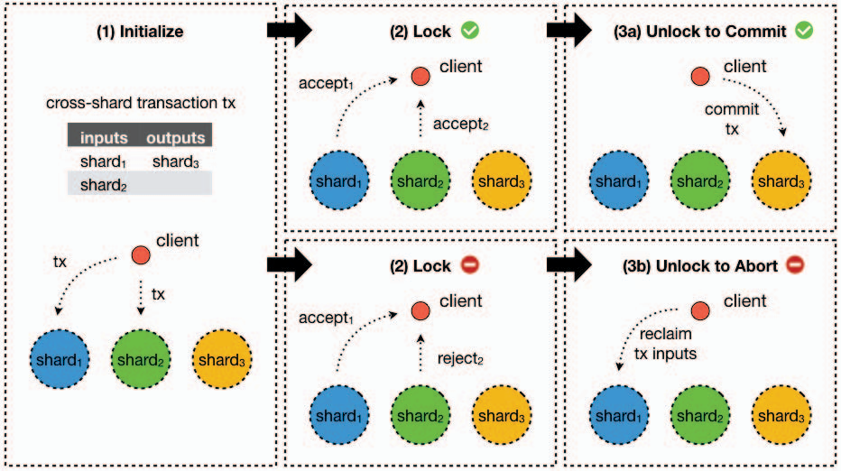
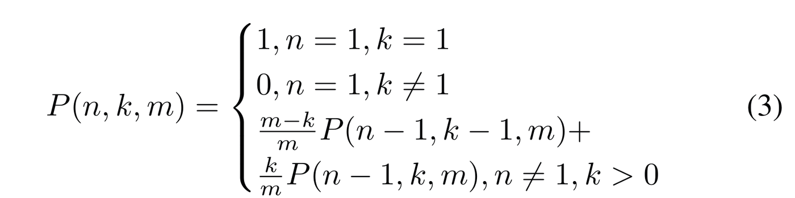
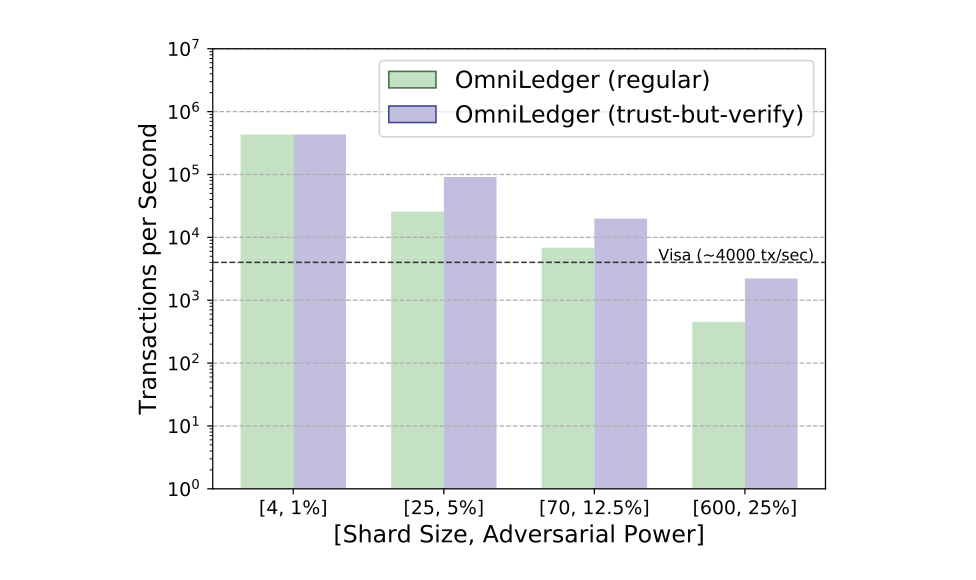

OmniLedger: A Secure, Scale-Out, Decentralized Ledger via Sharding
บทความที่คัดเลือก (Assignment Paper 3)
| สถานะ | บทความและงานประชุม | ไฟล์ |
|---|---|---|
| ตัวจริง | OmniLedger 2018 IEEE SP · 10.1109/SP.2018.000-5 | |
| สำรอง 1 | Back to the Drawing Board: Poisoning Attacks on Production Federated Learning 2022 IEEE SP · 10.1109/SP46214.2022.9833647 | |
| สำรอง 2 | Burglars' IoT Paradise: Understanding and Mitigating Security Risks of General Messaging Protocols on IoT Clouds 2020 IEEE SP · IEEE Xplore 9152619 |
วัตถุประสงค์การเรียนรู้ประจำบทเรียน (Learning Objectives)
- อธิบายได้ว่าทำไมระบบที่ทุก validator ตรวจทุกธุรกรรมจึงไม่ scale-out และ OmniLedger แก้ด้วยการแบ่ง shard อย่างไร
- อ่านและแก้ สมการที่ (1) (binomial) และ สมการที่ (2) (union bound) ได้ พร้อมคำนวณโอกาสที่ shard ถูกยึด
- อธิบายสามขั้นของ Atomix และเปรียบเทียบกับ two-phase commit และ Saga ในงาน microservices
- ประเมินผลการทดลองอย่างมีวิจารณญาณ: Table II กับ Appendix C, ตัวเลข 13,000 tps กับ Fig. 6 และความหน่วง 62.96 วินาที
- ซ้อมนำเสนอให้จบใน 4:30 ถึง 4:55 นาที และตอบคำถามป้องกันงาน 15 ข้อได้ โดยแยกข้อมูลของบทความออกจากความเห็นของผู้นำเสนอ
1. อภิธานศัพท์และคำอ่านสัทศาสตร์ (Glossary & Phonetics)
ศัพท์ที่ต้องออกเสียงและอธิบายได้ก่อนขึ้นนำเสนอ คำอ่านเขียนตามการออกเสียงภาษาอังกฤษที่ใช้ในวงการ นิยามอ้างอิงความหมายในบทความ:
| คำศัพท์ | คำอ่าน | นิยามในบริบทของบทความ | อุปมาหรือสิ่งที่คล้ายกัน |
|---|---|---|---|
| OmniLedger | ออม-นิ-เลด-เจอร์ | ระบบ distributed ledger ที่แบ่ง validator เป็น shard เพื่อขยายความจุตามจำนวนเครื่อง | ธนาคารที่เปิดหลายสาขา แต่ละสาขาดูแลบัญชีคนละกลุ่ม |
| Sharding / Shard | ชาร์ด-ดิ้ง / ชาร์ด | การแบ่ง state ของระบบเป็นส่วนย่อย ให้กลุ่ม validator แต่ละกลุ่มดูแลแบบขนาน | partition ของ Kafka หรือการแบ่งตารางฐานข้อมูลตาม key |
| Validator | แว-ลิ-เดเตอร์ | โหนดที่ตรวจและตกลงลำดับธุรกรรม ต้องมีตัวตนที่กัน Sybil ได้ | กรรมการที่ลงคะแนนรับรองบล็อก |
| Epoch | เอ-พ็อก | ช่วงเวลาคงที่ (ในบทความคือ 1 วัน) ระหว่างการจัด validator เข้า shard ใหม่ | รอบการหมุนเวียนเวรทุกวัน |
| Byzantine Fault Tolerance (BFT) | บิ-แซน-ไทน์ ฟอลต์ โท-เลอ-แรนซ์ | ความสามารถตกลงกันได้แม้มีผู้เข้าร่วมโกงได้ไม่เกิน f เมื่อ n = 3f + 1 | ที่ประชุมที่ยังตัดสินถูกแม้มีคนโกหกไม่เกินหนึ่งในสาม |
| ByzCoinX | บิซ-คอยน์-เอ็กซ์ | BFT consensus ภายใน shard แบบสื่อสารเป็นกลุ่มสองชั้น และ commit ธุรกรรมที่ไม่ขัดแย้งแบบขนาน | หัวหน้าทีมย่อยที่รวบรวมเสียงก่อนส่งถึงประธาน |
| Atomix | อะ-ตอม-มิกซ์ | โปรโตคอล atomic commit ข้าม shard แบบ lock แล้ว unlock ที่ client เป็นผู้ขับเคลื่อน | two-phase commit ที่ใช้ใบรับรองลงนามแทนผู้ประสาน |
| RandHound | แรนด์-ฮาวนด์ | โปรโตคอลสร้างค่าสุ่มแบบกระจายที่บิดเบือนไม่ได้และตรวจสอบได้ | การจับสลากที่ทุกคนร่วมใส่เลขลับ และตรวจผลย้อนหลังได้ |
| VRF (Verifiable Random Function) | วี-อาร์-เอฟ | ฟังก์ชันที่ให้ค่าสุ่มพร้อม proof ให้คนอื่นตรวจได้ด้วย public key ใช้จับสลากเลือก leader | สลากที่มีลายเซ็นกำกับว่าออกมาจริง |
| UTXO | ยู-ที-เอ็กซ์-โอ | Unspent Transaction Output หน่วยเงินที่ยังไม่ถูกใช้ ธุรกรรมใช้ทั้งก้อนแล้วสร้างก้อนใหม่ | ธนบัตรที่ต้องจ่ายทั้งใบแล้วรับเงินทอน |
| State Block | สเตต บล็อก | บล็อกสรุปสถานะทั้งหมดของ shard ปลาย epoch ด้วย Merkle root ใช้ตัดประวัติเก่า | snapshot หรือ checkpoint ของฐานข้อมูล |
| Trust-but-Verify | ทรัสต์-บัต-เว-ริ-ฟาย | ให้กลุ่มเล็กยืนยันเบื้องต้นเร็ว แล้วให้กลุ่ม core ตรวจซ้ำเพื่อ finality | ใบเสร็จชั่วคราวก่อนออกใบกำกับภาษีจริง |
| Sybil Attack | ซิบ-บิล แอต-แทก | การสร้างตัวตนปลอมจำนวนมากเพื่อครองเสียงข้างมาก | คนเดียวสมัครหลายบัญชีเพื่อโหวตซ้ำ |
| Union Bound | ยู-เนียน บาวนด์ | ขอบบน P(A หรือ B) ≤ P(A) + P(B) ใช้รวมความเสี่ยงของทุก shard เป็นความเสี่ยงต่อ epoch | ประเมินโอกาสเลวร้ายที่สุดแบบบวกรวม |
| Collective Signing (CoSi) | คอล-เลก-ทีฟ ไซ-นิ่ง | ลายเซ็นร่วมขนาดคงที่ของสมาชิกจำนวนมาก (77 ไบต์สำหรับ 100 validator) | ตราประทับเดียวแทนลายเซ็นกรรมการทุกคน |
2. ที่มา ความสำคัญ และตำราอ้างอิง (Background & Textbooks)
ระบบบัญชีแบบกระจายศูนย์รุ่นแรกอย่าง Bitcoin ให้ทุกเครื่องตรวจทุกธุรกรรม ความจุรวมจึงเท่ากับเครื่องเดียว งานสาย Byzantine fault tolerance พัฒนาต่อเนื่องจาก PBFT (1999) ที่ทำให้ BFT ใช้ได้จริงในระบบขนาดเล็ก ไปสู่ ByzCoin (USENIX Security 2016) ที่ใช้ collective signing ให้ consensus ขยายถึงระดับพันโหนด และ RandHound (IEEE SP 2017) ที่สร้างค่าสุ่มแบบกระจายซึ่งบิดเบือนไม่ได้ OmniLedger (IEEE SP 2018) รวมสามสายนี้เข้ากับการแบ่ง shard เพื่อให้ความจุรวมเพิ่มตามจำนวน validator โดยยังวัดความเสี่ยงเป็นตัวเลขได้ ณ 26 กันยายน 2026 IEEE Xplore แสดงว่าบทความถูกอ้างอิง 1,078 ครั้ง
ทำไมนิสิตวิศวกรรมคอมพิวเตอร์ควรศึกษางานนี้
1. เป็นกรณีศึกษาของ partition และ distributed transaction ภายใต้ผู้โจมตี: ปัญหาเดียวกับการแบ่ง partition และธุรกรรมข้ามบริการในระบบ backend แต่เพิ่มเงื่อนไขว่ามีโหนดตั้งใจโกง
2. เชื่อมทฤษฎีความน่าจะเป็นกับการออกแบบระบบ: ขนาด shard ถูกเลือกจากการแจกแจงทวินาม ไม่ใช่การเดา
3. ต้นแบบเขียนด้วยภาษา Go: ใช้แนวคิด concurrency และการจัดการ timeout แบบเดียวกับงานระบบกระจายตัวจริง
| ตำราหรือบทความพื้นฐาน | ส่วนที่ควรอ่าน | ใช้เข้าใจส่วนใดของ OmniLedger |
|---|---|---|
| L. Lamport, R. Shostak and M. Pease, "The Byzantine Generals Problem," ACM TOPLAS, 1982 | เงื่อนไข n ≥ 3f + 1 | เกณฑ์ ⌊n/3⌋ ในสมการที่ (1) |
| M. Castro and B. Liskov, "Practical Byzantine Fault Tolerance," OSDI, 1999 | สามเฟสของ PBFT, view-change, stable checkpoint | ByzCoinX และ state blocks |
| M. Kleppmann, Designing Data-Intensive Applications, O'Reilly, 2017 | บทที่ 6 Partitioning, บทที่ 7 Transactions, บทที่ 9 Consistency and Consensus | sharding, Atomix เทียบกับ two-phase commit |
| A. Narayanan et al., Bitcoin and Cryptocurrency Technologies, Princeton University Press, 2016 | UTXO model, Proof-of-Work, Sybil resistance | แบบจำลองสถานะและตัวตนของ validator |
| H. Karl and A. Willig, Protocols and Architectures for Wireless Sensor Networks, Wiley, 2005 | สถาปัตยกรรมเครือข่ายเซนเซอร์และข้อจำกัดด้านพลังงาน | การประยุกต์ที่ชั้น gateway (หมวดที่ 7) |
3. ปัญหาวิจัย: คอขวดการขยายขนาดของระบบบัญชีแบบกระจายศูนย์ (Scalability Bottlenecks)
ผู้เขียนวางโจทย์ด้วยสามเหลี่ยมใน Fig. 1: ระบบเดิมได้คุณสมบัติเพียงสองในสามด้าน ระหว่างความเป็นกระจายศูนย์ (decentralization), ความปลอดภัยระยะยาว (security) และการขยายแบบ scale-out

| ระบบ | Scale-out | Cross-shard atomicity | State blocks | ขนาดที่วัดได้ (validator) | เวลาก่อนล้มเหลว (ประมาณการ) | Latency |
|---|---|---|---|---|---|---|
| RSCoin | ใน permissioned | บางส่วน | ไม่มี | 30 | N/A | 1 s |
| Elastico | ใน PoW | ไม่มี | ไม่มี | 1,600 | 1 ชั่วโมง | 800 s |
| ByzCoin | ไม่ได้ | N/A | ไม่มี | 1,008 | 19 ปี | 40 s |
| Bitcoin-NG | ไม่ได้ | N/A | ไม่มี | 1,000 | N/A | 600 s |
| PBFT | ไม่ได้ | N/A | ไม่มี | 16 | N/A | 1 s |
| Nakamoto (Bitcoin) | ไม่ได้ | N/A | ไม่มี | 4,000 | N/A | 600 s |
| OmniLedger | ได้ | ได้ | มี | 2,400 | 68.5 ปี | 1.5 s |
ที่มา: Table IV หน้า 595 ตัวเลขของระบบอื่นมาจากคนละบทความและคนละสภาพการทดลอง และค่า 2,400 validator ของ OmniLedger มากกว่าการทดลองที่รายงานในบทความซึ่งสูงสุด 1,800 โหนด
ความท้าทายหลัก 3 ประการ (Section I หน้า 583)
- เลือก validator ที่เป็นตัวแทนทางสถิติ จากระบบ permissionless โดยกัน Sybil attack
- ไม่ให้ shard ใดถูกยึดตลอดอายุระบบ shard ต้องใหญ่พอและถูกสร้างใหม่ด้วยค่าสุ่มที่บิดเบือนไม่ได้
- ธุรกรรมข้าม shard ต้อง atomic สำเร็จทั้งหมดหรือยกเลิกทั้งหมด ไม่มีเงินหายหรือค้าง
Threat model และระบบต้นแบบสมมติ SLedger (Section III)
Threat model: validator ที่ไม่ซื่อสัตย์มีได้ไม่เกิน 25% (n = 4f) ผู้โจมตีปรับตัวได้ช้าในระดับ epoch ช่องทางระหว่างผู้ซื่อสัตย์เป็นแบบ synchronous ที่ความหน่วงไม่เกิน Δ
SLedger คือระบบสมมติที่ผู้เขียนใช้ชี้ปัญหา: พึ่ง randomness beacon ที่ต้องเชื่อใจ, หยุดทำงานตอนเปลี่ยน epoch, ไม่รองรับธุรกรรมข้าม shard, ประสิทธิภาพตกเมื่อ validator ล้ม และภาระเก็บข้อมูลสูง แต่ละข้อถูกแก้ด้วยกลไกหนึ่งในหมวดที่ 4
4. สถาปัตยกรรม OmniLedger 4 เสาหลัก (Four-Pillar Architecture)

1. Sharding ด้วยค่าสุ่มที่บิดเบือนไม่ได้ (Section IV-A และ IV-B)
- validator แต่ละรายคำนวณ ticket = VRFsk("leader" ‖ confige ‖ v) แลกกันภายใน Δ แล้วเลือก ticket ต่ำสุดเป็น leader
- leader รัน RandHound ได้ rnde พร้อม proof ถ้าไม่เริ่มภายใน Δ ให้เพิ่ม view แล้วจับใหม่
- ทุกคนใช้ rnde สร้าง permutation แล้วแบ่งเป็น m กลุ่มเท่า ๆ กัน
- สลับ validator ทีละชุดขนาด k = log(n/m) และไม่เกิน 1/3 ของ shard เพื่อให้ระบบทำงานต่อระหว่างเปลี่ยน epoch
2. ByzCoinX ภายใน shard (Section V-A และ V-B)
- สื่อสารเป็นต้นไม้สองชั้น: leader ถึง group leader ที่สุ่มเลือก แล้วถึงสมาชิก ถ้า group leader เงียบเกิน timeout ก็เลือกคนใหม่
- ไปขั้นถัดไปเมื่อได้การยอมรับเกิน 2/3 ถ้า leader ล้มจึงทำ view-change แบบ PBFT
- ธุรกรรมที่ไม่ใช้ UTXO เดียวกันและไม่พึ่ง output ของกันและกัน commit ในบล็อกขนานได้ เก็บเป็น blockDAG
- ผล: throughput +20% และ latency ต่อบล็อก −35% ที่ความขนาน 4 (Fig. 9, Table III)
3. Atomix สำหรับธุรกรรมข้าม shard (Section IV-C)
- Initialize: client gossip cross-TX ไปยังทุก input shard
- Lock: input shard ตรวจผ่าน consensus แล้วล็อก UTXO และออก proof-of-acceptance หรือออก proof-of-rejection
- Unlock to Commit: ยอมรับครบทุกใบ ส่งให้ output shard สร้าง UTXO ใหม่
- Unlock to Abort: มีการปฏิเสธแม้ใบเดียว ส่งให้ input shard คืนสถานะ UTXO เดิม
collective signature ทำให้ proof เล็ก: 77 ไบต์สำหรับ shard 100 validator เทียบกับประมาณ 9 KB ถ้าใช้ลายเซ็นแยก (หน้า 589)
4. State blocks และ trust-but-verify (Section V-C และ V-D)
- State block: ปลาย epoch เก็บ UTXO ใน ordered Merkle tree ใส่ root ใน header แล้วรัน consensus บน header ใช้เป็น genesis ของ epoch ถัดไป ประวัติเก่าจึงทิ้งได้
- คุ้มค่าเมื่อ validator ตามไม่ทันเกิน 19 วันในการจำลองกับ Bitcoin (Fig. 11)
- Trust-but-verify: กลุ่ม optimistic ขนาดเล็กยืนยันเบื้องต้นใน 1.38 วินาที แล้วกลุ่ม core ตรวจซ้ำเพื่อ finality ผู้ลงนามบล็อกผิดถูกระบุตัวและลงโทษ

5. ซิมูเลเตอร์การจัด Shard และธุรกรรมข้าม Shard (Interactive Shard Allocation & Cross-Shard Transaction Simulator)
ทุกตัวเลขคำนวณในเบราว์เซอร์จากสูตรของบทความ แท็บ A ให้ลองสุ่มจัด validator เข้า shard และดูโอกาสที่ shard ถูกยึดตามสมการ (1) และ (2) แท็บ B คำนวณต้นทุนธุรกรรมข้าม shard ตาม Appendix C และแท็บ C เดินผ่านโปรโตคอล Atomix ทีละขั้น

6. การทดลองและผลลัพธ์เชิงตัวเลข (Experiments & Quantitative Results)
สภาพแวดล้อม (Section VII และ VIII-A): ต้นแบบภาษา Go รันบน DeterLab ด้วยเครื่องจริง 60 เครื่อง (Intel E5-2420 v2, RAM 24 GB, ลิงก์ 10 Gbps) จำลองสูงสุด 1,800 โหนด จำกัดทุกลิงก์ที่ 20 Mbps หน่วง 100 ms ใช้ข้อมูล 10,000 บล็อกแรกของ Bitcoin บล็อก 1 MB ในโหมดปกติ และ 500 KB กับ 16 MB ในโหมด trust-but-verify ที่มีกลุ่ม optimistic 32 กลุ่มต่อ shard
Table II: scale-out (ผู้โจมตี 12.5%, shard ละ 70 โหนด)
| จำนวน shard | tps | อัตราเร่ง | ประสิทธิภาพต่อ shard |
|---|---|---|---|
| 1 | 439 | 1.00 | 100% |
| 2 | 869 | 1.98 | 99.0% |
| 4 | 1,674 | 3.81 | 95.3% |
| 8 | 3,240 | 7.38 | 92.3% |
| 16 | 5,850 | 13.33 | 83.3% |
สองคอลัมน์ขวาคำนวณจากค่าในตาราง (หน้า 593) บทความไม่ระบุสัดส่วนธุรกรรมข้าม shard ในการทดลองนี้
Table I: latency ในการยืนยัน (วินาที)
| [ขนาด shard, ผู้โจมตี] | [4, 1%] | [25, 5%] | [70, 12.5%] | [600, 25%] |
|---|---|---|---|---|
| Regular | 1.38 | 5.99 | 8.04 | 14.52 |
| ชั้นแรก | 1.38 | 1.38 | 1.38 | 4.48 |
| ชั้นที่สอง | 1.38 | 55.89 | 41.84 | 62.96 |
ข้อความหน้า 593 บอกว่า finality ของธุรกรรมความเสี่ยงสูงยังไม่ถึงหนึ่งนาที แต่ตารางที่ผู้โจมตี 25% แสดง 62.96 วินาที

ค่าที่อ่านจาก Fig. 6 (ผู้นำเสนออ่านจากพิกัดเวกเตอร์ใน PDF)
| [s, ผู้โจมตี] | regular (ประมาณ) | trust-but-verify (ประมาณ) |
|---|---|---|
| [4, 1%] | 431,600 | 431,600 |
| [25, 5%] | 25,700 | 91,200 |
| [70, 12.5%] | 6,800 | 19,900 |
| [600, 25%] | 450 | 2,200 |
วิธีอ่าน: 100 อยู่ที่ y = 186.21 pt และ 107 ที่ y = 76.2 pt จึงหนึ่งลำดับขนาดเท่ากับ 15.716 pt ตรวจการสอบเทียบกับเส้น Visa ได้ราว 4,120 (บทความระบุประมาณ 4,000)
ตัวเลข 13,000 tps: อ้างอย่างไรให้ถูก
ที่ 1,800 โหนดและผู้โจมตี 12.5% บทนำ (หน้า 584) บอก 6,000 tps, Section VIII-B (หน้า 593) บอก 13,000 tps ใน 25 shard ส่วนแท่ง [70, 12.5%] ใน Fig. 6 อ่านได้ราว 6,800 tps (regular) และ 19,900 tps (trust-but-verify) ไม่มีค่าใดเท่ากับ 13,000 และบทความไม่อธิบายที่มา รายงานและสไลด์จึงอ้าง Table II และค่าที่อ่านจาก Fig. 6 พร้อมระบุว่าเป็นค่าประมาณ
| ผลการทดลองอื่น | ตัวเลข | หลักฐาน |
|---|---|---|
| ByzCoinX เทียบ ByzCoin | throughput +20%, latency ต่อบล็อก −35% ที่ความขนาน 4 และแย่ลงเมื่อขนานมากกว่านั้น | Fig. 9, Table III หน้า 593 ถึง 594 |
| ต้นทุนเปลี่ยน epoch | RandHound เกิน 70% ของเวลา bootstrap กรณีแย่สุดราว 3 ชั่วโมงที่ 1,800 โหนด | Fig. 7, Section VIII-C หน้า 593 |
| latency ที่ client เห็นกับ Atomix | shard 70 โหนด: ราว 9 ถึง 12 วินาทีจาก 1 ถึง 7 shard, shard 600 โหนด: ราว 15 เป็น 26 วินาทีจาก 1 ถึง 3 shard (อ่านจากกราฟ) | Fig. 8 หน้า 593 |
| state blocks | คุ้มค่าเมื่อ validator ตามไม่ทันเกิน 19 วัน (2,736 บล็อกของ Bitcoin) | Fig. 11, Section VIII-F หน้า 594 |
7. วิจารณ์เชิงวิชาการและการประยุกต์กับ Distributed Sensor Gateways
จุดเด่น 5 ประการ
- ออกแบบครบทั้งระบบ: จัด shard, consensus, ธุรกรรมข้าม shard, การจัดเก็บ และ latency ในสถาปัตยกรรมเดียว
- ความปลอดภัยวัดได้เป็นตัวเลข: ขนาด shard ผูกกับโอกาสล้มเหลว เช่น 10−6
- มีต้นแบบจริงและทดลองขนาดใหญ่: ภาษา Go ที่ 1,800 โหนดด้วยข้อมูลจาก Bitcoin
- ผู้เขียนเปิดเผยข้อจำกัดของตนเอง: Section X และ Appendix C
- ผลกระทบสูง: IEEE Xplore แสดงการอ้างอิง 1,078 ครั้ง (ณ 26 กันยายน 2026)
จุดด้อยและข้อจำกัด 6 ประการ
- scale-out ไม่ได้แยกผลของธุรกรรมข้าม shard: Table II 3.81 เท่าที่ 4 shard แต่ Appendix C ประเมินราว 1.56 เท่า
- สมการและตัวเลขผิด: Eq. (1) ขอบบนเป็น n, Eq. (3) สัมประสิทธิ์ผิด, 3.7% ควรเป็น 11.1%, 1.56 ตรงกับ 4 UTXO
- ตัวเลขพาดหัวไม่สอดคล้อง: 6,000 กับ 13,000 tps, finality 62.96 วินาที, Table IV 2,400 validator
- การทดลองไม่ครอบคลุม: กรณี 25% ระดับ Visa เป็นค่าประมาณ, ลิงก์คงที่, ไม่มี SD, [4, 1%] ปลอดภัยน้อยกว่าชุดอื่นมาก
- ต้นทุนเปลี่ยน epoch สูง: ต้องใช้ epoch ยาวระดับวัน ไม่เหมาะกับผู้โจมตีที่ปรับตัวเร็ว
- ข้อแลกเปลี่ยนของการยืนยันเร็วและ liveness: ชั้นแรกเสี่ยง double-spending น้อยกว่า 10%, Atomix พึ่งผู้ขับเคลื่อน, วิเคราะห์ความปลอดภัยแบบ informal
สมการที่ (1): ตามที่พิมพ์และแบบที่ถูกต้อง (หน้า 591)
ตามทฤษฎีบททวินาม ผลรวมถึง n เท่ากับ (m + 1 − m)n = 1 สมการที่พิมพ์จึงคำนวณความเสี่ยงไม่ได้ เมื่อแก้แล้ว shard 70 โหนดที่ผู้โจมตี 12.5% มีโอกาสล้มเหลวราว 2.2 × 10−6 (คำนวณซ้ำ) ลองสลับดูผลได้ในซิมูเลเตอร์แท็บ A
Appendix C: ธุรกรรมข้าม shard กินความเร็วไปเท่าไร (หน้า 597)
เมื่อ UTXO กระจายตาม hash ธุรกรรม 4 UTXO ใน 4 shard แตะเฉลี่ย 2.73 shard ผู้เขียนได้อัตราเร่งจาก 1 เป็น 4 shard ราว 1.56 เท่า จากสูตร m × E[1/k] ผู้นำเสนอคำนวณแบบนับงานรวม m / E[k] ได้ 1.46 เท่า (3 UTXO ได้ 1.73 เท่า) ต่ำกว่าสูตรของผู้เขียนเสมอตามอสมการของ Jensen และทั้งสองแบบต่ำกว่า 3.81 เท่าใน Table II มาก
Section X ของบทความยอมรับเองว่า throughput ขึ้นกับภาระงาน และถ้าทุกธุรกรรมแตะทุก shard ระบบที่มี shard เดียวจะดีกว่า
| ข้อสังเกตเพิ่มเติมจากการคำนวณซ้ำ | รายละเอียด | ตำแหน่ง |
|---|---|---|
| การตั้งค่า [4, 1%] | โอกาสล้มเหลวต่อ shard ราว 5.9 × 10−4 และด้วย 450 shard ความเสี่ยงต่อ epoch ราว 23% ถึง 27% ขณะที่อีกสามการตั้งค่าอยู่ราว 2 × 10−6 ต่อ shard | Fig. 6, Table I (การคำนวณของผู้นำเสนอ) |
| ความน่าจะเป็นหา group leader ที่ซื่อสัตย์ | 1 − (15/24)10 ≈ 99.1% แต่บทความพิมพ์ 98.6% | Section VI-D หน้า 592 |
| Fig. 5 ซ้ายและขวา | ข้อความ Section VI-B เรียกภาพซ้ายขวาสลับกับคำบรรยายใต้ภาพ | หน้า 591 |
| สัญลักษณ์ซ้ำความหมาย | n เป็นทั้งจำนวน validator, ขนาด shard และจำนวน shard ส่วน m เป็นทั้งจำนวน shard และสัดส่วนผู้โจมตี | Section III, VI |
การประยุกต์กับ Distributed Sensor Gateways (ข้อเสนอของผู้นำเสนอ ไม่ใช่ข้อค้นพบของบทความ)
OmniLedger ไม่ได้กล่าวถึงเครือข่ายเซนเซอร์ แนวคิดที่นำมาใช้ได้อยู่ที่ชั้น gateway หรือ fog ซึ่งมีพลังงานและแบนด์วิดท์พอสำหรับ BFT และลายเซ็นดิจิทัล ส่วนโหนดเซนเซอร์ที่ใช้แบตเตอรี่ยังส่งข้อมูลแบบเดิม
[โหนดเซนเซอร์] ส่งค่าวัดแบบประหยัดพลังงาน (ไม่รัน BFT)
|
[gateway พื้นที่ A] [gateway พื้นที่ B] [gateway พื้นที่ C] จัดเป็น shard ตามพื้นที่
| consensus ภายในกลุ่ม gateway ของพื้นที่ (BFT ขนาดเล็ก)
| สลับสมาชิกบางส่วนทุก epoch ด้วยค่าสุ่มที่ตรวจสอบได้
|
เหตุการณ์ข้ามพื้นที่ (เช่น อุปกรณ์ย้ายจาก A ไป B) lock แล้ว unlock พร้อม proof แบบ Atomix
|
checkpoint ทะเบียนอุปกรณ์เป็นระยะ (แนวคิด state block) gateway ใหม่เริ่มงานได้เร็ว
| กลไกใน OmniLedger | การออกแบบที่ชั้น gateway | ข้อควรระวัง |
|---|---|---|
| Sharding ด้วยค่าสุ่มที่ตรวจสอบได้ | แบ่ง gateway ตามพื้นที่ และสุ่มสลับสมาชิกบางส่วนทุก epoch | พื้นที่เล็กมี gateway น้อย ขนาดกลุ่มอาจไม่พอตามสมการที่ (1) |
| ByzCoinX | ตกลงลำดับเหตุการณ์ภายในพื้นที่แม้ gateway บางตัวถูกยึด | ลิงก์ไร้สายสูญเสียแพ็กเก็ต ข้อสมมติ synchronous อาจไม่เป็นจริง |
| Atomix | บันทึกเหตุการณ์ที่ต้องสอดคล้องสองพื้นที่ เช่น การย้ายอุปกรณ์ หรือสัญญาณเตือนที่ต้องยืนยันร่วม | ต้องมีผู้ขับเคลื่อน unlock ถ้าอุปกรณ์ต้นทางดับ ต้องให้ gateway ทำแทน |
| State blocks | checkpoint ทะเบียนอุปกรณ์และค่าสอบเทียบ ให้ gateway ใหม่ไม่ต้องเล่นประวัติทั้งหมด | ต้องมีลายเซ็นร่วมของกลุ่ม จึงเชื่อ checkpoint ได้ |
8. ห้องซ้อมบทนำเสนอ 5 นาที (Interactive Rehearsal Studio)
จำลองเวทีจริง: นับถอยหลัง 5:00 นาที สไลด์ 7 หน้าจากไฟล์นำเสนอจริง และ teleprompter ที่ใช้บทพูดชุดเดียวกับ speaker notes ใน PPTX บทพูดยาว 4:45 นาที (ช่วงเป้าหมาย 4:30 ถึง 4:55) ตัวหนาคือคำที่ต้องเน้น และ [หายใจ] คือจุดหยุดหายใจ
อธิบายเนื้อหาในสไลด์: เรียนรู้ก่อนนำเสนอ
เปลี่ยนสไลด์ด้านบนเพื่อเปลี่ยนเนื้อหาอธิบาย9. จำลองตอบคำถามกรรมการ 15 ข้อ (Interactive Q&A Defense Simulator)
คำถามที่อาจารย์น่าจะถาม ครอบคลุม Atomix, ByzCoinX, สมการที่ (1), ต้นทุนธุรกรรมข้าม shard และเครือข่ายเซนเซอร์ กดคำถามเพื่อดูคำตอบสั้น คำตอบเต็ม และตำแหน่งหลักฐาน ฝึกพูดคำตอบสั้นให้จบใน 20 วินาทีก่อนเปิดดู (ชุดเดียวกับไฟล์ qna-cheatsheet.md)
เจตนาของคำถาม: ตรวจว่าอธิบายโปรโตคอลหลักได้ครบทุกขั้นหรือไม่
คำตอบสั้น: สามขั้น Initialize, Lock, Unlock โดย client เป็นผู้ขับเคลื่อน และฝ่ายอื่นทำแทนได้
คำตอบเต็ม: Atomix มีสามขั้นครับ Initialize: client สร้างธุรกรรมข้าม shard แล้วกระจาย (gossip) ไปถึงทุก input shard Lock: leader ของแต่ละ input shard ตรวจธุรกรรมผ่าน consensus ภายใน shard ถ้าถูกต้องก็ทำเครื่องหมายว่า input ถูกใช้แล้ว บันทึกลง ledger และออก proof-of-acceptance ซึ่งเป็น Merkle proof ที่ shard ลงนามร่วม ถ้าไม่ถูกต้องก็ออก proof-of-rejection Unlock: ถ้าได้ proof-of-acceptance ครบทุก input ก็ส่ง unlock-to-commit ให้ output shard สร้าง UTXO ใหม่ ถ้ามี proof-of-rejection แม้เพียงหนึ่งใบ ก็ส่ง unlock-to-abort ให้ input shard คืนสถานะ UTXO เดิม ผู้ขับเคลื่อนคือ client แต่ validator หรือ client รายอื่นทำแทนได้ เพราะข้อมูลที่ต้องใช้ถูก gossip ไว้แล้ว
เจตนาของคำถาม: ดูว่าเชื่อมโยงกับทฤษฎี distributed transaction ที่เรียนมาได้หรือไม่
คำตอบสั้น: โครงคล้าย 2PC แต่ผู้เข้าร่วมคือ shard ที่ซื่อสัตย์โดยรวม และหลักฐานเป็น proof ที่ใครก็ตรวจได้
คำตอบเต็ม: โครงสร้างคล้าย two-phase commit ครับ ขั้น lock เทียบได้กับ prepare และขั้น unlock เทียบได้กับ commit หรือ abort แต่ต่างกันสามจุด หนึ่ง ผู้เข้าร่วมใน 2PC คือโหนดที่อาจล่มแต่ไม่โกง ส่วนใน Atomix ผู้เข้าร่วมคือ shard ทั้งกลุ่มซึ่งซื่อสัตย์โดยรวมเพราะรัน BFT consensus สอง ผลการตัดสินของแต่ละ shard อยู่ในรูป proof ที่มี collective signature ใครก็ตรวจได้ จึงไม่ต้องเชื่อผู้ประสานกลาง สาม shard ไม่ต้องสื่อสารกันเอง client เป็นผู้ส่ง proof ต่อ ผู้เขียนระบุว่าโปรโตคอล atomic commit แบบเดิมซับซ้อนเกินจำเป็น เพราะ shard ซื่อสัตย์โดยรวมและไม่ล่มถาวร ส่วน collective signature ทำให้ proof เล็ก: shard 100 validator ใช้ลายเซ็นเพียง 77 ไบต์ เทียบกับประมาณ 9 KB ถ้าใช้ลายเซ็นแยกของแต่ละคน
เจตนาของคำถาม: ทดสอบว่าเห็นจุดอ่อนด้าน liveness ของโปรโตคอลหรือไม่
คำตอบสั้น: ค้างได้ ผู้เขียนยอมรับเอง แต่ฝ่ายอื่นส่ง unlock แทนได้
คำตอบเต็ม: ค้างได้ครับ และผู้เขียนยอมรับเองว่าเงินไม่ถูกคืนโดยอัตโนมัติ ต้องมีผู้เริ่มขั้น unlock-to-abort ผู้เขียนเทียบว่า client ที่ล่มถาวรมีผลเหมือน client ที่ทำ private key หาย ทางบรรเทามีสองทาง หนึ่ง ใครก็ได้ในระบบ เช่น validator ที่ได้ค่าธรรมเนียม ส่ง unlock transaction แทนได้ เพราะข้อมูลถูก gossip ไว้แล้ว สอง กำหนดให้ shard ของ input ที่มีค่าน้อยที่สุดเป็นผู้ประสาน โดยให้ validator f + 1 รายส่ง unlock เพื่อกันกรณี leader ไม่ซื่อสัตย์ ในมุมวิศวกรรม นี่คือการแลกความเรียบง่ายของโปรโตคอลกับ liveness ที่ขึ้นกับผู้ขับเคลื่อน
เจตนาของคำถาม: ตรวจความเข้าใจเรื่อง communication pattern และ fault tolerance
คำตอบสั้น: เปลี่ยนต้นไม้สื่อสารเป็นแบบสองชั้นที่ทนโหนดล้ม และ commit บล็อกที่ไม่ขัดแย้งแบบขนาน
คำตอบเต็ม: ByzCoin ใช้ต้นไม้สื่อสาร (multicast tree) ซึ่งเร็วแต่เปราะ เมื่อมีโหนดล้มจะถอยไปใช้การสื่อสารแบบทุกคนถึงทุกคนคล้าย PBFT ประสิทธิภาพจึงตกมาก และผู้โจมตีใช้จุดนี้ถ่วงระบบได้ ByzCoinX เปลี่ยนเป็นต้นไม้สองชั้นความลึกคงที่ leader ส่งถึง group leader ที่สุ่มเลือกในแต่ละกลุ่ม แล้วส่งต่อถึงสมาชิก ถ้า group leader ไม่ตอบภายใน timeout ก็สุ่มสมาชิกคนอื่นแทน และไปขั้นถัดไปเมื่อได้การยอมรับเกิน 2/3 ถ้า leader เองล้มก็ทำ view-change แบบ PBFT นอกจากนี้ยัง commit บล็อกที่ไม่ขัดแย้งกันแบบขนาน ผลวัดคือ throughput เพิ่ม 20% และ latency ต่อบล็อกลด 35% ที่ความขนาน 4 และเมื่อกลุ่มเล็กกว่า 600 โหนด รูปแบบของ ByzCoinX เร็วกว่าต้นไม้ของ ByzCoin
เจตนาของคำถาม: ดูความเข้าใจเรื่อง dependency และ concurrency control
คำตอบสั้น: ขัดแย้งเมื่อใช้ UTXO ตัวเดียวกัน หรือเมื่อตัวหนึ่งใช้ output ของอีกตัว นอกนั้นทำขนานได้
คำตอบเต็ม: ธุรกรรมขัดแย้งกันสองกรณีครับ หนึ่ง สองธุรกรรมใช้ UTXO ตัวเดียวกัน ต้องให้ commit ได้เพียงรายการเดียว สอง output ของ txA ถูกใช้เป็น input ของ txB ต้องให้ txA อยู่ในบล็อกที่มาก่อน ส่วนธุรกรรมที่โอนเข้าที่อยู่เดียวกันไม่ขัดแย้ง เพราะสร้าง UTXO คนละตัว ByzCoinX เก็บบล็อกเป็น blockDAG ที่บล็อกหนึ่งมีได้หลาย parent และใส่ backpointer ชี้ไปยังบล็อกที่พึ่งพา โดยอาศัยคุณสมบัติ transitive ของ dependency เพื่อลดจำนวน hash ที่ต้องเก็บ (ความเห็นของผู้นำเสนอ: เทียบได้กับการจ่ายงานให้ goroutine ตาม key ที่ไม่ทับกัน และบังคับลำดับเฉพาะงานที่พึ่งพากัน)
เจตนาของคำถาม: ตรวจความเข้าใจเรื่อง bias-resistant randomness และ leader election
คำตอบสั้น: ต้องการค่าสุ่มที่บิดเบือนไม่ได้และตรวจสอบได้โดยไม่พึ่งผู้ให้ค่าสุ่มที่ต้องเชื่อใจ VRF ใช้เลือก leader ของ RandHound
คำตอบเต็ม: ระบบต้องการค่าสุ่มที่บิดเบือนไม่ได้ ทำนายไม่ได้ บุคคลที่สามตรวจสอบได้ และขยายขนาดได้ โดยไม่พึ่ง randomness beacon ที่ต้องเชื่อใจ RandHound ให้คุณสมบัติเหล่านี้แต่ต้องมี leader และถ้าเลือก leader แบบตายตัว ผู้โจมตีจะทำให้ล้มได้ซ้ำหลายครั้ง จึงใช้ VRF จับสลาก validator แต่ละรายคำนวณ ticket = VRF ของ ("leader" ‖ config ‖ view) แลกกันภายในเวลา Δ แล้วยอมรับ ticket ที่มีค่าต่ำสุด ถ้า leader ไม่เริ่มงานภายใน Δ ก็เพิ่ม view แล้วจับใหม่ โอกาสที่ผู้โจมตี 25% คุม leader ติดกัน n ครั้งไม่เกิน 1/4n ซึ่งต่ำกว่า 10−6 เมื่อ n = 10 จากนั้นทุกคนใช้ค่าสุ่ม rnde สร้าง permutation แล้วแบ่งเป็น m กลุ่มขนาดใกล้เคียงกัน
เจตนาของคำถาม: ข้อที่อาจารย์น่าจะถาม เพราะสไลด์ชี้ว่ามีจุดผิด
คำตอบสั้น: เป็นโอกาสที่ shard มีผู้โจมตีไม่เกินหนึ่งในสามตามการแจกแจงทวินาม แต่ขอบบนพิมพ์เป็น n ทำให้ผลรวมเท่ากับ 1 เสมอ
คำตอบเต็ม: สมการที่ (1) มองการสุ่ม validator เข้า shard เป็นการทดลองแบบทวินามครับ shard ขนาด n แต่ละที่นั่งเป็นผู้โจมตีด้วยความน่าจะเป็น m และ shard ปลอดภัยเมื่อจำนวนผู้โจมตี X ไม่เกิน ⌊n/3⌋ เพราะ BFT ต้องการ n = 3f + 1 ดังนั้น P[X ≤ ⌊n/3⌋] คือผลรวมจาก k = 0 ถึง ⌊n/3⌋ ของ C(n, k) mk (1 − m)n − k และโอกาสที่ shard ล้มเหลวคือ 1 ลบค่านี้ แต่บทความพิมพ์ขอบบนของผลรวมเป็น n ซึ่งตามทฤษฎีบททวินามผลรวมจะเท่ากับ 1 เสมอ จึงเป็นการพิมพ์ผิด ความหมายเชิงวิศวกรรมคือ ยิ่งผู้โจมตีมาก shard ต้องใหญ่ขึ้นมาก ผมคำนวณซ้ำได้ว่า shard 70 โหนดที่ผู้โจมตี 12.5% และ shard 600 โหนดที่ 25% ต่างมีโอกาสล้มเหลวราว 2 × 10−6 ต่อ shard
เจตนาของคำถาม: ดูว่าเข้าใจ union bound และที่มาของตัวเลขพาดหัวด้านความปลอดภัย
คำตอบสั้น: union bound ของทุก shard คูณ 4/3 จากการที่ผู้โจมตีสั่งรัน RandHound ซ้ำได้ แล้วแปลงเป็นเวลาด้วย epoch ยาว 1 วัน
คำตอบเต็ม: มาจากสมการที่ (2) ครับ ความล้มเหลวทั้ง epoch ประมาณด้วย union bound คือจำนวน shard คูณโอกาสล้มเหลวของหนึ่ง shard และเผื่อกรณีผู้โจมตีได้เป็น leader แล้วสั่งรัน RandHound ใหม่ โดยรอบที่ k มีน้ำหนัก 1/4k รวมเป็นอนุกรมเรขาคณิตได้ไม่เกิน 4/3 เท่า ที่ผู้โจมตี 12.5% กับ 16 shard ผู้เขียนได้ 4 × 10−5 ต่อ epoch และเมื่อ epoch ยาว 1 วัน 1 หารด้วย 4 × 10−5 เท่ากับ 25,000 วัน หรือประมาณ 68.5 ปี ผมคำนวณซ้ำด้วย shard 70 โหนดได้ 4.6 × 10−5 ใกล้กัน ข้อควรระวังคือในสมการนี้ n หมายถึงจำนวน shard ไม่ใช่ขนาด shard เหมือนในสมการที่ (1)
เจตนาของคำถาม: คำถามเรื่อง cross-shard overhead ที่เป็นหัวใจของข้อวิจารณ์
คำตอบสั้น: บทความไม่ระบุสัดส่วนธุรกรรมข้าม shard ในการทดลอง ขณะที่ Appendix C ของผู้เขียนเองประเมินอัตราเร่งจริงที่ 4 shard เหลือราว 1.56 เท่า
คำตอบเต็ม: Table II ใช้ผู้โจมตี 12.5% shard ละ 70 โหนด throughput เพิ่มจาก 439 เป็น 5,850 tps เมื่อเพิ่มจาก 1 เป็น 16 shard หรือ 13.3 เท่า แต่บทความไม่ระบุสัดส่วนธุรกรรมข้าม shard ในการทดลองนี้ ขณะที่ Appendix C ของผู้เขียนเองคำนวณว่า ถ้ากระจาย UTXO ตาม hash แบบสุ่ม ธุรกรรมส่วนใหญ่จะข้าม shard เช่น ธุรกรรม 3 UTXO ใน 3 shard มีโอกาสอยู่ shard เดียวเพียงราว 11% (บทความพิมพ์ 3.7%) และอัตราเร่งจาก 1 เป็น 4 shard จะเหลือราว 1.56 เท่า เทียบกับ 3.81 เท่าใน Table II ผมคำนวณแบบนับงานรวมได้ 1.46 ถึง 1.73 เท่า และผู้เขียนเขียนเองใน Section X ว่า ถ้าทุกธุรกรรมแตะทุก shard ระบบที่มี shard เดียวจะดีกว่า ผล scale-out จึงใช้ได้กับภาระงานที่ธุรกรรมข้าม shard น้อย
เจตนาของคำถาม: ทดสอบว่าตรวจตัวเลขพาดหัวกับข้อมูลดิบในกราฟหรือไม่
คำตอบสั้น: ที่ 1,800 โหนดบทความมีทั้ง 6,000 และ 13,000 tps แต่กราฟอ่านได้ราว 6,800 หรือ 19,900 tps จึงอ้าง Table II และ Fig. 6 แทน
คำตอบเต็ม: ต้องอ้างอย่างระมัดระวังครับ สำหรับ 1,800 โหนดที่ผู้โจมตี 12.5% บทความให้ตัวเลขสามแบบ บทนำบอก 6,000 tps, Section VIII-B บอก 13,000 tps ใน 25 shard ส่วนแท่งกราฟ [70, 12.5%] ใน Fig. 6 ผมอ่านจากพิกัดเวกเตอร์ในไฟล์ PDF ได้ราว 6,800 tps แบบปกติ และ 19,900 tps แบบ trust-but-verify โดยตรวจการอ่านกับเส้น Visa ได้ราว 4,120 ใกล้ค่า 4,000 ที่บทความระบุ ไม่มีค่าใดเท่ากับ 13,000 และบทความไม่อธิบายที่มา ผมจึงใช้ Table II และค่าที่อ่านจาก Fig. 6 เป็นหลัก พร้อมระบุว่าเป็นค่าประมาณ
เจตนาของคำถาม: ดูว่าเข้าใจ trade-off ระหว่าง latency กับความปลอดภัย
คำตอบสั้น: ได้การยืนยันเบื้องต้นใน 1.38 วินาที แต่ยอมรับความเสี่ยงของชั้นแรก และ finality ใช้ 41.84 ถึง 62.96 วินาที
คำตอบเต็ม: trust-but-verify แบ่ง validator ใน shard เป็นกลุ่ม optimistic ขนาดเล็ก (เล็กได้ถึงหนึ่งโหนด) ที่ยืนยันเบื้องต้นได้เร็ว กับกลุ่ม core ที่ตรวจซ้ำเพื่อให้ finality Table I แสดงว่าการยืนยันชั้นแรกใช้ 1.38 วินาที ที่ผู้โจมตี 1% ถึง 12.5% และ 4.48 วินาทีที่ 25% ส่วนชั้นที่สองใช้ 41.84 ถึง 62.96 วินาที (ยกเว้น [4, 1%] ที่ทุกแบบเท่ากับ 1.38) สิ่งที่แลกไปคือความเสี่ยงของการยืนยันชั้นแรก บทความระบุว่าโอกาสที่การยืนยันเบื้องต้นจะเปิดช่องให้ double-spending น้อยกว่า 10% จึงเหมาะกับธุรกรรมมูลค่าต่ำ และผู้ที่ลงนามบล็อกผิดจะถูกระบุตัวและลงโทษ ข้อสังเกตคือข้อความอ้างว่า finality ใช้เวลาไม่ถึงหนึ่งนาที แต่ Table I ที่ผู้โจมตี 25% แสดง 62.96 วินาที
เจตนาของคำถาม: ทดสอบการเชื่อมผลการทดลองกับข้อจำกัดที่ผู้เขียนยอมรับ
คำตอบสั้น: การเปลี่ยน epoch แพงเพราะ RandHound กรณีแย่สุดราว 3 ชั่วโมง epoch สั้นจะเสียสัดส่วนเวลามากขึ้น
คำตอบเต็ม: เพราะต้นทุนการเปลี่ยน epoch สูงครับ Fig. 7 แสดงว่า RandHound ใช้เวลามากกว่า 70% ของการ bootstrap และกรณีแย่สุดที่ต้องรันซ้ำราว 10 ครั้งจนได้ leader ที่ซื่อสัตย์ ที่ 1,800 โหนดใช้ประมาณ 3 ชั่วโมง ถ้า epoch ยาว 1 วัน ต้นทุนนี้ยอมรับได้ แต่ถ้า epoch สั้นลง สัดส่วนเวลาที่เสียจะสูงขึ้น ผู้เขียนจึงยอมรับใน Section X ว่าระบบไม่เหมาะกับผู้โจมตีที่ปรับตัวเร็ว ระหว่างเปลี่ยน epoch ระบบยังทำงานต่อได้ เพราะทยอยสลับ validator ทีละชุดขนาด k = log(n/m) ซึ่งน้อยกว่า 1/3 ของขนาด shard
เจตนาของคำถาม: วัดทักษะการประเมินระเบียบวิธีวิจัยอย่างตรงไปตรงมา
คำตอบสั้น: มีต้นแบบจริงและเงื่อนไขเครือข่ายชัด แต่ลิงก์คงที่ ไม่รายงาน SD กรณีสำคัญเป็นค่าประมาณ และการตั้งค่า [4, 1%] ปลอดภัยน้อยกว่าชุดอื่นมาก
คำตอบเต็ม: จุดแข็งคือเป็นต้นแบบจริงภาษา Go รันบนเครื่องจริง 60 เครื่อง จำลอง 1,800 โหนด และจำกัดลิงก์ที่ 20 Mbps หน่วง 100 ms แต่มีข้อจำกัดสี่ข้อ หนึ่ง ทุกลิงก์มีค่าคงที่ ไม่มีความแปรปรวนแบบเครือข่ายจริง สอง ไม่รายงานส่วนเบี่ยงเบนมาตรฐานหรือจำนวนรอบที่ทำซ้ำ สาม กรณีผู้โจมตี 25% ที่ throughput ระดับ Visa ต้องใช้ราว 4,200 โหนด เป็นเพียงค่าประมาณเพราะแพลตฟอร์มรับภาระไม่ไหว สี่ ผมคำนวณด้วยสมการที่ (1) พบว่าการตั้งค่า [4, 1%] ที่ให้ throughput สูงสุดมีโอกาสล้มเหลวต่อ shard ราว 5.9 × 10−4 และเมื่อมี 450 shard ความเสี่ยงต่อ epoch อยู่ราว 23% ถึง 27% ต่างจากอีกสามการตั้งค่าที่อยู่ราว 2 × 10−6 ต่อ shard แท่งกราฟนั้นจึงไม่ได้อยู่ที่ระดับความปลอดภัยเดียวกับแท่งอื่น
เจตนาของคำถาม: เชื่อมบทความกับรายวิชา 305432
คำตอบสั้น: ใช้ที่ชั้น gateway หรือ fog ไม่ใช่บนโหนดเซนเซอร์ เพราะ BFT และลายเซ็นดิจิทัลกินพลังงานและแบนด์วิดท์
คำตอบเต็ม: ผมมองว่าไม่ควรรันบนโหนดเซนเซอร์โดยตรงครับ เพราะ BFT ต้องแลกข้อความหลายรอบและใช้ลายเซ็นดิจิทัล ซึ่งกินพลังงานและแบนด์วิดท์ของโหนดที่ใช้แบตเตอรี่ แต่เหมาะกับชั้น gateway หรือ fog แบ่ง gateway ตามพื้นที่เป็น shard สุ่มสลับสมาชิกด้วยค่าสุ่มที่ตรวจสอบได้ ทำให้ผู้โจมตีที่ยึด gateway ได้บางตัวรวมกำลังไว้ใน shard เดียวได้ยาก ใช้แนวคิด Atomix เมื่อเหตุการณ์ต้องบันทึกในสองพื้นที่พร้อมกัน เช่น อุปกรณ์ย้ายพื้นที่ และใช้ state block เป็น checkpoint ของทะเบียนอุปกรณ์ ข้อจำกัดคือบทความสมมติช่องทางแบบ synchronous และผู้โจมตีไม่เกิน 25% ซึ่งเครือข่ายไร้สายที่สูญเสียแพ็กเก็ตอาจไม่เป็นไปตามนั้น ทั้งหมดนี้เป็นความเห็นของผม ไม่ได้อยู่ในบทความ
เจตนาของคำถาม: ดูว่านิสิตเข้าใจลึกพอจะนำไปใช้ในงานจริงหรือไม่
คำตอบสั้น: shard คือ partition, Atomix คือ distributed transaction แบบล็อกก่อน, state block คือ snapshot แต่ Kafka รับมือ crash fault ไม่ใช่ Byzantine fault
คำตอบเต็ม: มีสามจุดเชื่อมครับ หนึ่ง shard เทียบกับ partition ของ Kafka ที่กระจายตาม key ขยาย throughput ด้วยการแบ่ง state และปัญหาเกิดเมื่องานต้องแตะหลาย partition สอง Atomix เทียบกับ two-phase commit และ Saga ใน microservices แต่ Atomix ล็อก input ไว้ก่อนแบบ pessimistic จึงกัน double spend ได้ ส่วน Saga ไม่ล็อกและย้อนงานด้วย compensating transaction สาม ByzCoinX ที่ commit งานไม่ขัดแย้งแบบขนาน เทียบได้กับ worker pool ใน Go ที่แยกงานตาม key และ state block เทียบกับ snapshot และ log compaction ที่ช่วยให้โหนดใหม่ไม่ต้องเล่น log ทั้งหมด จุดต่างสำคัญคือ Kafka ออกแบบให้รับมือโหนดล่ม (crash fault) ไม่ใช่โหนดที่ตั้งใจโกง จึงไม่ต้องสุ่มสมาชิกใหม่ทุก epoch (ทั้งหมดเป็นการเทียบของผู้นำเสนอ)
10. แบบประเมินความเข้าใจ 5 ข้อ (Comprehension Quiz)
เลือกคำตอบหนึ่งข้อต่อคำถาม ระบบจะแสดงเฉลยและคำอธิบายทันที
11. คลังอ้างอิงและ BibTeX (References & BibTeX)
บรรณานุกรมรูปแบบ IEEE ชุดเดียวกับรายงานฉบับย่อ และ BibTeX ของบทความหลักสำหรับเล่มโครงงานบทที่ 2
@inproceedings{kokoriskogias2018omniledger,
author = {Kokoris-Kogias, Eleftherios and Jovanovic, Philipp and Gasser, Linus and Gailly, Nicolas and Syta, Ewa and Ford, Bryan},
title = {OmniLedger: A Secure, Scale-Out, Decentralized Ledger via Sharding},
booktitle = {2018 IEEE Symposium on Security and Privacy (SP)},
year = {2018},
pages = {583--598},
address = {San Francisco, CA, USA},
publisher = {IEEE},
doi = {10.1109/SP.2018.000-5}
}
[2] E. Kokoris-Kogias, P. Jovanovic, N. Gailly, I. Khoffi, L. Gasser, and B. Ford, "Enhancing Bitcoin Security and Performance with Strong Consistency via Collective Signing," in Proc. 25th USENIX Security Symposium, 2016.
[3] E. Syta, P. Jovanovic, E. Kokoris-Kogias, N. Gailly, L. Gasser, I. Khoffi, M. J. Fischer, and B. Ford, "Scalable Bias-Resistant Distributed Randomness," in Proc. 38th IEEE Symposium on Security and Privacy, 2017.
[4] L. Luu, V. Narayanan, C. Zheng, K. Baweja, S. Gilbert, and P. Saxena, "A Secure Sharding Protocol for Open Blockchains," in Proc. 2016 ACM SIGSAC Conference on Computer and Communications Security (CCS), 2016, pp. 17–30.
[5] G. Danezis and S. Meiklejohn, "Centrally Banked Cryptocurrencies," in Proc. 23rd Network and Distributed System Security Symposium (NDSS), 2016.
[6] L. Lamport, R. Shostak, and M. Pease, "The Byzantine Generals Problem," ACM Transactions on Programming Languages and Systems, vol. 4, no. 3, pp. 382–401, 1982.
[7] M. Castro and B. Liskov, "Practical Byzantine Fault Tolerance," in Proc. 3rd Symposium on Operating Systems Design and Implementation (OSDI), 1999, pp. 173–186.
[8] T. Crain, C. Natoli, and V. Gramoli, "Red Belly: A Secure, Fair and Scalable Open Blockchain," in Proc. 2021 IEEE Symposium on Security and Privacy (SP), 2021, pp. 466–483, doi: 10.1109/SP40001.2021.00087.
[9] H. Karl and A. Willig, Protocols and Architectures for Wireless Sensor Networks. Chichester, U.K.: Wiley, 2005.